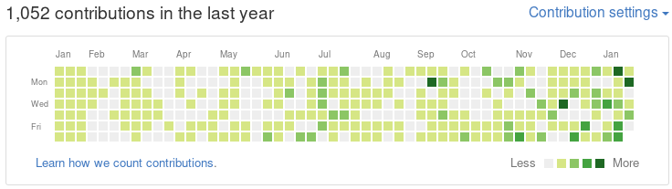

りんだんさんのやつのパクリ記事です。

※さっき撮りました
Index
2016年につくったやつ一覧
Vimプラグイン
- aref-web.vim
- Vimから非同期的にウェブページを開きに行くやつ
- Web辞書とかを引く用。 例えばWeblio辞書とか、HoogleとかStackageとか
- この一覧の中でも、特に力を入れているものの一つ
- 皆、使って
- どんな感じかは、GitHubのREADME.mdを見てもらえればわかると思う
- adrone-hs.vim
- HaskellでVimプラグインを書くという試み
- WIP
- adrone.vimというVim用の、 TweetVim風に日記を書くためのプラグイン …を色々改良するために作った
- adrone.vimはすっごいVim plugin作りたての頃に作ったものなので、色々アレ。 まあ使う分には問題ないし、実際私的にすごく使ってる。
- nvim-vim-runner
- NeoVimで動かないVimプラグインのうち限られたものを、NeoVim上のVimで動かすためのダーティーワークアラウンド
- NeoVim内でVimを動かすためのコマンド群
Haskell
- nico-lang
- 矢澤にこちゃん言語です
- にこちゃんのセリフを繋げてプログラミングをします
- いま最高のホットなesolangです、brainf*ckと同型な言語
- ここでの「同型」は、nico-langとbrainf*ckの命令字句が全単射であってその合成が恒等写像になるという意味です
- 丁度今作っている途中。 とりあえずbrainf*ckコードとの相互変換はできるようになったので、 あとはパーサーで、プログラミングと関係ない字句を無視するようにするだけで完成する
- Please see 矢澤にこ言語が完成（※）しました
- これでHELLOって出力できる
笑顔届ける矢澤にこにこ！にっこにっこにーにっこにっこにーにっこにっこにーにっこにっこにーにっこにっこにーにっこにっこにーにっこにっこにーにっこにっこにーにっこにっこにーにこにーはみんなのもの！だめだめだめっ！にっこにっこにーにっこにっこにーにっこにっこにーにっこにっこにーにっこにっこにーにっこにっこにーにっこにっこにーにっこにっこにー笑顔届ける矢澤にこにこ！にこにーって覚えてラブニコ！ｷﾓﾁﾜﾙｲだめだめだめっ！ぴょんぴょんぴょんっ！笑顔届ける矢澤にこにこ！笑顔届ける矢澤にこにこ！にっこにっこにーにっこにっこにーにっこにっこにーにこにーはみんなのもの！だめだめだめっ！にっこにっこにーにっこにっこにーにっこにっこにーにっこにっこにーにっこにっこにーにっこにっこにーにっこにっこにーにっこにっこにーにっこにっこにーにっこにっこにーにっこにっこにーにっこにっこにーにっこにっこにーにっこにっこにーにっこにっこにーにっこにっこにーにっこにっこにーにっこにっこにーにっこにっこにーにっこにっこにーにっこにっこにーにっこにっこにーにっこにっこにー笑顔届ける矢澤にこにこ！にこにーって覚えてラブニコ！ｷﾓﾁﾜﾙｲだめだめだめっ！ぴょんぴょんぴょんっ！笑顔届ける矢澤にこにこ！笑顔届ける矢澤にこにこ！にっこにっこにーにっこにっこにーにっこにっこにーにっこにっこにーにこにーはみんなのもの！だめだめだめっ！にっこにっこにーにっこにっこにーにっこにっこにーにっこにっこにーにっこにっこにーにっこにっこにーにっこにっこにーにっこにっこにーにっこにっこにーにっこにっこにーにっこにっこにーにっこにっこにーにっこにっこにーにっこにっこにーにっこにっこにーにっこにっこにーにっこにっこにーにっこにっこにーにっこにっこにー笑顔届ける矢澤にこにこ！にこにーって覚えてラブニコ！ｷﾓﾁﾜﾙｲだめだめだめっ！ぴょんぴょんぴょんっ！笑顔届ける矢澤にこにこ！笑顔届ける矢澤にこにこ！にっこにっこにーにっこにっこにーにっこにっこにーにっこにっこにーにこにーはみんなのもの！だめだめだめっ！にっこにっこにーにっこにっこにーにっこにっこにーにっこにっこにーにっこにっこにーにっこにっこにーにっこにっこにーにっこにっこにーにっこにっこにーにっこにっこにーにっこにっこにーにっこにっこにーにっこにっこにーにっこにっこにーにっこにっこにーにっこにっこにーにっこにっこにーにっこにっこにーにっこにっこにー笑顔届ける矢澤にこにこ！にこにーって覚えてラブニコ！ｷﾓﾁﾜﾙｲだめだめだめっ！ぴょんぴょんぴょんっ！笑顔届ける矢澤にこにこ！笑顔届ける矢澤にこにこ！にっこにっこにーにっこにっこにーにっこにっこにーにっこにっこにーにっこにっこにーにっこにっこにーにこにーはみんなのもの！だめだめだめっ！にっこにっこにーにっこにっこにーにっこにっこにーにっこにっこにーにっこにっこにーにっこにっこにーにっこにっこにーにっこにっこにーにっこにっこにーにっこにっこにーにっこにっこにーにっこにっこにーにっこにっこにー笑顔届ける矢澤にこにこ！にこにーって覚えてラブニコ！ｷﾓﾁﾜﾙｲだめだめだめっ！にっこにっこにーぴょんぴょんぴょんっ！笑顔届ける矢澤にこにこ！
- 矢澤にこちゃん言語です
- aiya000.github.io
- ここです、このブログです。
- Hakyll（JekyllのHaskell実装）と、CSSフレームワークBoostrapの改造である Umiを使ってる
- デザインはそんなにしたわけじゃないけど、いきあたりばったりなデザインとその実装がとても楽しかったし、 まだどんどん作り込んでいこうと思っている
- haskell_de_groupstructure
- GitBook用のリポジトリ
- Haskellでわかる代数的構造で読める
- 結構精神が病んでた時に、3連休を無駄にしたくないという、偶然出た意地によって、働かない脳で書いた簡単な読みもの
- hs-algebra
- 「代数的構造とHaskellって、結構相性がいいよねー」と思って、書いてみたやつ。 半群、モノイド、群を書いた
- まあ、haskell_de_groupstructureのまとめ的なもの
- 一応環も書いたのだけど、定義に分配のための関数を含めてしまった。 よく考えたら乗算加算があれば、あとは括弧とかがなんとかしてくれる
- hs-gorira
- Haskell製Twitter bot
- Basicマルコフ連鎖
- learning-Haskell
- Haskellに対する学びを常にコミットしていくスタイル
- hs-hereis
- sh-hereisを使いやすくしようと思って、Haskellで書き直してる
- WIP
- yi-aref-web
- WIP
- yiという、最近私的に結構コントリビュートしてるテキストエディタのプラグインを書こうとしてる
- そもそもyiプラグインをどう書くか、というのに悩んでおり、結局直接yiにPR送る方に力を入れ中
- hs-twi-high
- ツイ廃。 hs-goriraで作った、Twitter APIを愚直に代数的データ構造へ写したライブラリ。
- とはいえ、hs-goriraの改善を最近していない。 hs-twi-highはhs-goriraでの進捗を流用している。 故にアレ
- WIP
- hs-sentence-jp
- hs-goriraの脳の中身
その他
- sh-hereis
- あるディレクトリパスをシェル上でブックマークしておくやつ
- 超便利で、個人的には超使ってる
- zsh-shell-kawaii

- シェルを顔文字にして、リターンコードによって表情を変えてもらう可愛い例のアレ
- life-game.clj
- いわゆるライフゲームのclojure
未実装 - pure functionallyを尽くすつもりで書いたら、コアアルゴリズムが不整合を起こし、終わった
- ライフゲームが成り立っていない
- いわゆるライフゲームのclojure
- Maid
- 作った発表資料（スライド）の置き場所
- VimConf2016で発表したやつも置いてあるよ、見れるよ
- ここで見れる
- sh-tovim
- vim-jpで取り上げられていた実装を書いただけ……元記事どこだっけ、教えて
- zplugでインストールする用
- tamarugocchi.clj
- 恩師に学生時代に与えられたJavaの課題をClojureで実装したもの
- learning-math
- 数学の学習の進捗をアレするやつ
- とは言ったものの、数学の学習って……ネットの記事とか読む、頭とノートで考える……っていうのばっかりで、 テキストファイルに書く機会ってあんまりなかった……。 (そもそもplaintextと数学の相性がそんなによくない気がする）
- aacceessoorryy
- dotfilesが膨らみすぎて（現在のコミット数
1458）、とりあえずUtility系のシェルスクリプトはこっちに切り離した
- dotfilesが膨らみすぎて（現在のコミット数
Pull Requests
18件のPRを出したらしい。
- yi-editor/yi: 8件
- vim-jp/vimdoc-ja-working: 1件
- xmonad/xmonad-contrib: 1件
- dwango/scala_text: 1件
- thinca/vim-quickrun: 1件
特にyiのPRでは、初めてのマジの英語しか通じない人とのアレだったので、 そういうところに突っ込めるようになったのはすごく成長かなと思ってます。
PRでの会話内容を見ると、僕がきょどってるのを見れるよ :(
英語、というと、vimdocの翻訳プロジェクトにも参加してみました。
翻訳の流れはとりあえず普通に、Vimの英語ドキュメントを訳してから、Google翻訳で妥当性を確認する…… って感じにやってました。
今年
今年はvital.vim, open-browser.vimにNeoVimで動かすためのPRを投げたり、 Haskellのstackageにも作ったパッケージを登録してみたりした。
ﾖｯｼｬ!
この記事はこちらから修正リクエストを送ることができます。
2016年につくったやつ一覧 :D - github
ゴミ箱ボタンの左にある、鉛筆ボタンを押してね！